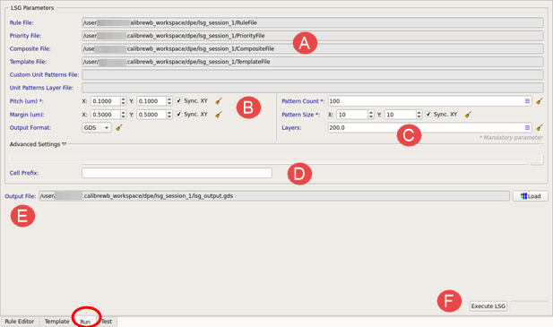

To access: From a
Calibre WORKbench menu bar, Litho > Calibre
LSG Layout Generation, or from a Calibre WORKbench Tcl
shell call—see “Invoking Calibre LSG from a Tcl Shell Call”.
Click the Run tab.
Use this tab to fill in the required Calibre LSG files
and layout clip information to execute a run and load the output
in Calibre WORKbench.
Description
Figure 1. Run Tab

Objects
Object
Description
A
LSG Parameters pane —
Use to display the location of the input files and parameters for
your run.
Files:
Rule
File — Specify the LSG rule file.
Priority
File — Specify the unit cell priority (weight) file.
File must contain at least one non‑zero weight.
Composite
File — Specify the unit cell composite patterns file.
Template
File — Specify the clip template file.
Custom Unit Patterns
File — Specify a file containing custom unit pattern
rules.
Unit Patterns Layer
File — Specify the layers used for the unit patterns.
B
Parameters:
Note:
The wildcard (*) denotes a mandatory parameter.
Pitch
(um) * — Specify the edge lengths in microns of a unit
pattern (the pitch size). These values must be positive floating‑point
numbers 0.002 microns or greater. Sync. XY is
checked by default.
Margin
(um) — Specify the horizontal and vertical space in
microns between unit cell patterns. These values must be positive
floating‑point numbers if Sync. XY is checked
(default). If margin values are not specified, the default margin
space is 2 * pitch size.
Output
Format — Specify the output format of the layout clip (OASIS1 or
GDS). The default is OASIS.
C
Parameters:
Note:
The wildcard
(*) denotes a mandatory parameter.
Pattern
Count * — Specify the number of the layout clips that
are output. This value must be a positive integer.
Pattern
Size * — Specify the size of one layout clip in terms
of the number of unit patterns used to form the clip side. This
value must be a positive integer. Sync. XY is
checked by default.
Layers —
Specify the layout layer number for the layout clips. Specify this
number as a positive integer. The default is 200.
D
Advanced Settings:
Cell Prefix — Specify a
cell name prefix for each output layout clip.
E
Output File —
Specify the name of the output database file for the layout clips.
A file extension of .gds or .oas is
added depending on the database format. The default is .oas.
F
Execute LSG —
Perform the Calibre LSG run. When the run completes, you can use
the Load button to load the layout database
for viewing in Calibre WORKbench.
1 OASIS® is a registered trademark
of Thomas Grebinski and licensed for use to SEMI®, San Jose. SEMI® is a registered trademark
of Semiconductor Equipment and Materials International.